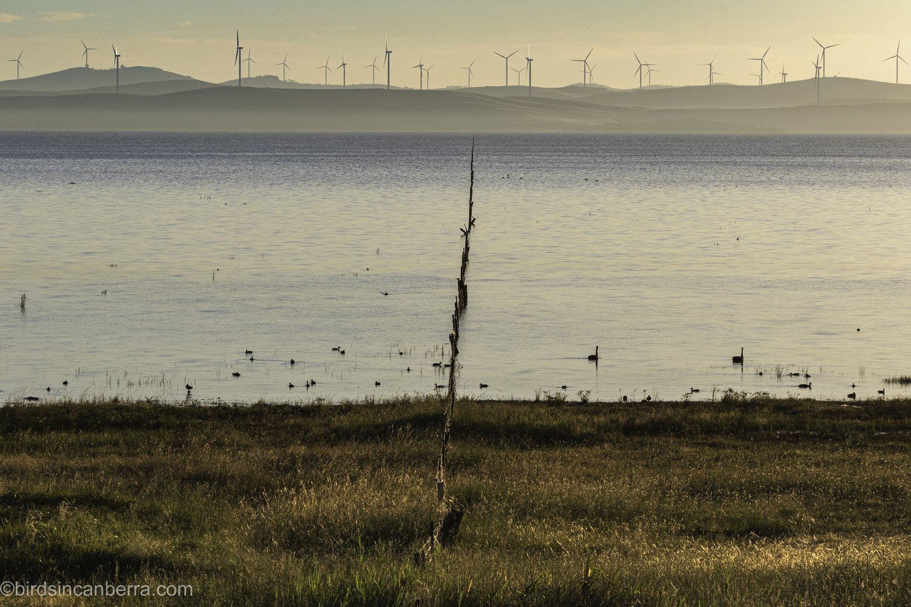
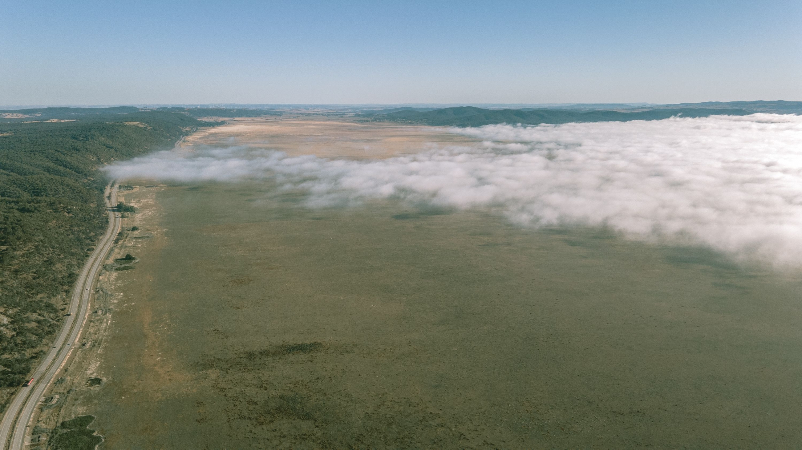
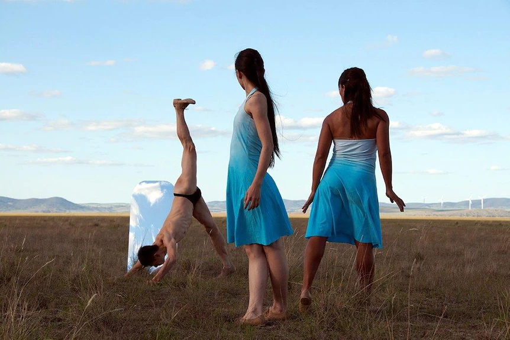
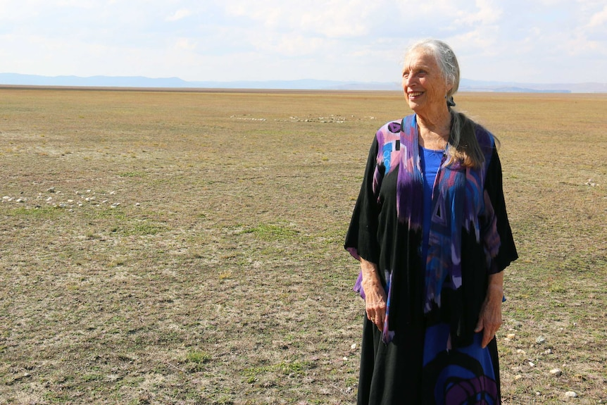
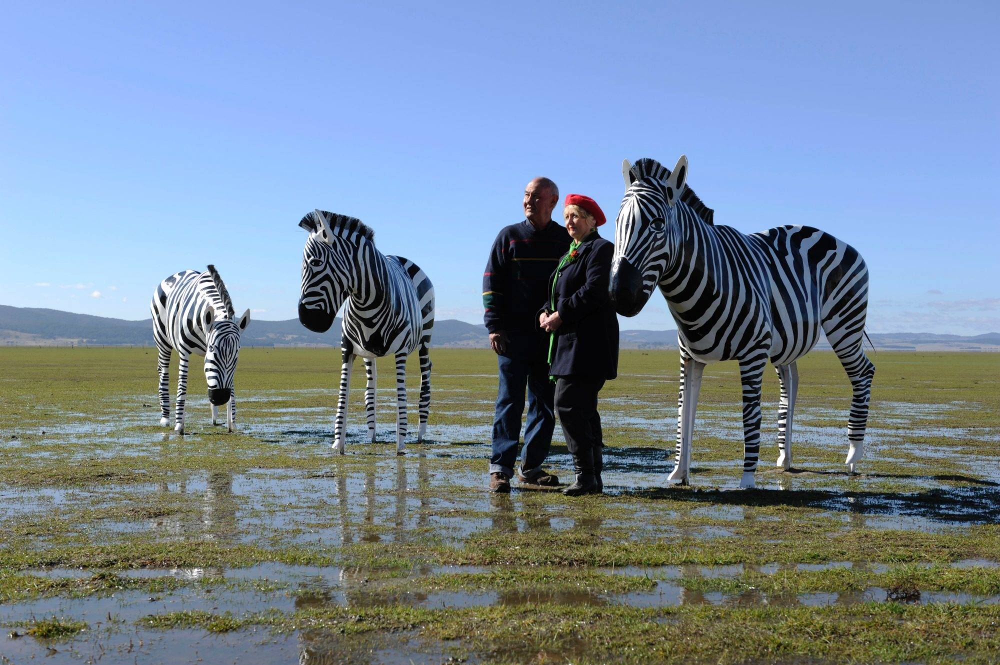

What happened to Lake George?
Once brimming with water that lapped against the side of the highway, Lake George is now completely dry.
Originally from Wollongong, and now living in Waramanga, Kelly had driven past the lake many times but had never seen it full, which made her wonder how it could be a lake at all.
She suspected it could be due to climate change or even underground rivers or channels.
As part of our Curious Canberra series I tracked down the answer for her.
How does it work?
If myths and legends are to be believed the water seeps into another world and lake levels have the ability to predict the outcome of federal elections.
But, as I soon discovered, the lake has played an important role in the region's history.
It was once touted as the ideal location for Canberra, played host to dances and is considered a geological wonder.
An expert helping me decode the mysteries of Lake George, geologist Patrick De Deckker from the Australian National University, said he had seen the lake full in 1971.
He said the lake as we know it today is highly dependent on rainfall and in periods of La Nina the lake could fill.
If the lake level was to increase again... the highway would be underwater and it would be at great cost of course.
"The water was up to the old highway and the bridge at Collector was underwater," he said.
"Meteorologists and agriculturalists should take fluctuations into consideration because it was not long ago that we had so much water.
"If the lake level was to increase again, but I doubt that very much, the highway would be underwater and it would be at great cost of course."
Patrick said the lake was originally a depression in the ground and part of a larger river system.
He said it was not until a fault in the earth caused the bed to fall further away from the escarpment, trapping the water, that it became a lake.
The escarpment, where the current Federal Highway runs today, acted as a dam blocking the lake off from surrounding river systems and stopping any water from flowing out to sea.
Patrick said as Lake George no longer fed into other rivers the water mostly drained via evaporation.
"In Canberra we are under a Mediterranean climate so we have an excess of evaporation over precipitation," he said.
"To maintain a full lake you either have to reduce evaporation, through things like more cloud cover, or you increase precipitation."
Geography and Hydrology
Lake George is an endorheic lake. There is no outflow to rivers.
The lake is believed to be more than a million years old. In the beginning, streams drained its catchment into the Yass River, after a while the Lake George escarpment rose due to major crust movement along a strong fault line. This resulted in blocking this drainage and forming the lake.
In previous Ice Ages Lake George has been much larger and deeper.
At 25 km long and 10 km wide, Lake George is long, largely flat and extremely shallow, with a very small catchment. Resultant evaporation rates as well as a tendency for strong winds to blow the water back on itself explain the mysterious filling and drying episodes on both short term and long term time scales that have been observed.
The lake's depth when full can range from 1.5 to 4.5 metres; however in many areas it is only around 0.8 to 1.0 metre deep. Its deepest point has been measured as 7.5 metres. When full, the lake holds about 500,000,000 cubic metres of water.
Between the late 1980s and mid-1990s, the lake lapped the Federal Highway on its western edge.
Lake George once earmarked as 'Federal City'

In 1820 Governor Macquarie named the burgeoning body of water Lake George after England's then king.
Though Patrick said there is evidence from charcoal found in the lake sediment that Aboriginal people had been present in the landscape at least 60,000 years earlier, with the Ngunnawal people calling the lake Weereewa.
But Patrick said an early consideration of Lake George as the centre of the planned "Federal City" would have been a mistake.
It would have been a substantial mistake because of the ever-changing lake levels, the mosquitoes, the dust, all sorts of things.
"At the time of trying to find a suitable location for Canberra, the shorelines of Lake George was a possibility," he said.
"So this artist painted buildings on the shores of Lake George very much looking like Venice. It's quite amazing.
"It would have been a substantial mistake because of the ever-changing lake levels, the mosquitoes, the dust, all sorts of things.
"But it's interesting Canberra had to have a lake as well, so there's this fascination, humans want to have lakes around large, beautiful cities."
Over the years fluctuation of the lake levels meant Lake George was once a holiday destination.
Patrick told me that people would travel from Sydney to Collector by train on weekends to go fishing and boating.
Though, when full, the lake has proved treacherous.
Records from The Canberra Times show it claimed the lives of five Army cadets from Duntroon in 1956 while they were participating in a sailing competition.
A handful of fisherman have also lost their lives over the years when the lake become dangerous in high winds.
Weereewa - A Festival of Lake George
While the lake has fascinated scientists for decades, it's spirit, energy and landscape has also inspired the arts.
Renowned choreographer Elizabeth Cameron Dalman began holding festivals on the ancient lake bed in the late 90s.
The events, titled Weereewa - A Festival of Lake George, encouraged the audience to follow her and her fellow dancers into nature as they moved about on the plain.
Elizabeth told me about the first time she set eyes on Lake George.
"I only got half way along Lake Road and the moon was coming up over a full lake, and I remember getting out of my car and dancing up and down the road because the power of the lake already felt like it was calling me," she said.
She said the lake had inspired many artists' work.
"Lake George has so many stories about it. There have been so many artists inspired to write stories, to do beautiful paintings, to sing about it, to dance about it, to dance on it and with it, and I think this is a wonderful way to celebrate this special place," she said.
"This lake of course is one of the oldest lakes in the world and that in itself is a wonderful thing.
"Just standing on the lake you do feel the power of it. I think we need to understand a little bit more about our natural wonders in Australia."
But the festivals were not the only works of art that made their way onto the lake.
In 2010 four life-sized zebra sculptures attracted motorists' attention.
But the herd's time on the lake was short lived when graziers leasing the land requested the removal of the fibreglass sculptures, which had been installed without permission and cemented into the ground.
While Patrick was doubtful that the lake would ever properly fill again, due to changes in the climate, he remained open to the idea.
But, either way, he suggested a name change in four years time could help people understand the scientific and environmental importance of the ancient lake.
"My suggestion is that perhaps in 2020, 200 years after Governor Macquarie would have been here, to consider giving an older name to Lake George, perhaps a name used by the native people of this land."